IT Service Request 3.0.1
The IT Service Request process allows employees of a company to ask the IT department to solve a problem. The request will be initially reviewed by a user from the IT Help Desk department. The IT help desk's user makes a preliminary analysis and decides if the issue can be solved or needs more information. If the case requires more information, it is send to the IT Help Desk so they can get a more detailed analysis of the issue.
If the issue can be solved, it is sent to IT Operations so they can review and resolve the issue. Then, the case goes to the Report details solution task. The user who performs this task reviews the issue and decides if the issue has been resolved or if it needs to go for more detailed analysis. In the case the issue has been resolved, then the case is reviewed by the IT department's supervisor, who stores the information about problem and finishes the case by sending an email to the employee who reported the problem letting him/her know that the issue has been resolved successfully.
If the issue needs more detailed analysis, it is sent to the Detailed analysis task and is assigned to a user from the IT Help Desk department. In the case the issue needs even more detailed evaluation, the case is assigned to the user's supervisor in the Obtain more information task. The supervisor adds more information and sends the case back to the IT Help Desk. The user sends the case to the IT Operations department, which is assigned to the Review and Resolve issue task. The IT operations user resolves the issue and sends it to the Report details solutions task. The user assigned to this task decides if the issue has been resolved or if it needs more detailed analysis. In the case the issue needs more analysis, the case will loop until the issue is fixed. On the other hand, if the issue has been resolved, then the case is reviewed by the IT department's supervisor, who stores the information about the problem and finishes the case by sending an email to the employee who reported the issue letting him/her know that the issue has been resolved successfully.
The process map of the process is the following:
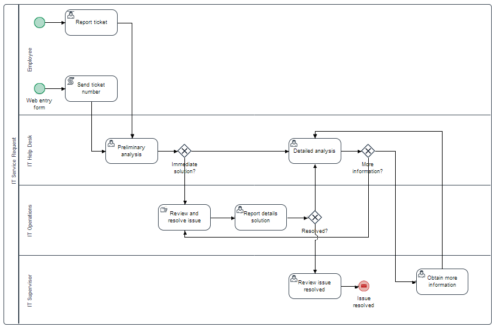
Starting a New Request
A case can be initiated in two ways:
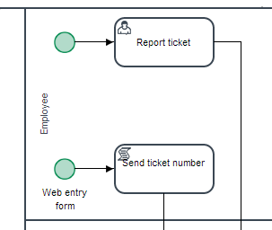
- Starting a case from the New Case option under the Home panel and filling in the form. Note that the User information section is filled in automatically with information about the user currently logged in.
- Filling in and submitting the form from a Web Entry link. Since web entry is meant to be used by external users, the User information section has to be filled in manually.
The first Dynaform named IT Service Request has two sections:
The User information section with the fields: Date, Time (populated automatically), Name, Email, Department, and Phone.
The Ticket Details section with the fields: Incident Date, Category (Options: Software and Hardware), Severity (Options: Tweak, Minor, Mayor, Crash, Block), Priority (Options: Very Low, Low, Normal, high and very high), Summary , Description and a file field to attach documents regarding the issue.
In this example, the employee Carter creates a new case from inside ProcessMaker and fills in the form described above. The User Information section is filled in automatically with the user information that is retrieved using a trigger that is set to be executed before the form is loaded.
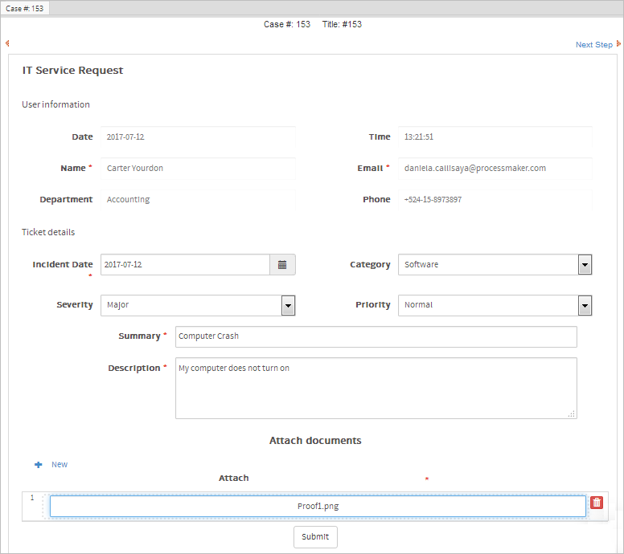
As soon as the employee submits the form, the process executes a trigger to send an email notification to notify the employee that the request is being analyzed, as shown in the image below.
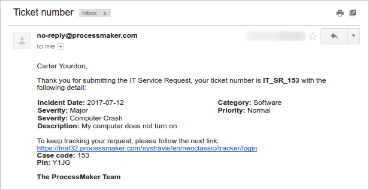
The request is routed to the Preliminary analysis task and is assigned to a member of the IT Help Desk department. In this example, the user Alyssa.
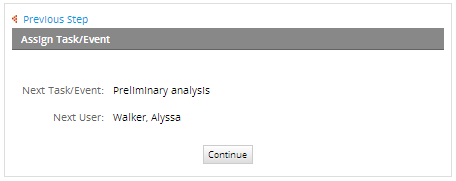
Preliminary Analysis - IT Help Desk
The IT Help Desk's user evaluates the issue. Depending on the user's evaluation and the option selected in the Options dropdown, the case will be routed to the Review and resolve issue task, or to the Detailed analysis task.
Immediate solution: This option enables the Summary preliminary issues field, which has five options to select from. These options are stored in the PMT_IT_ISSUES PM table.
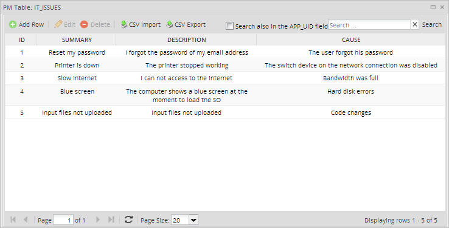
Once the option is selected, the Preliminar description and Cause of the issue fields will be completed automatically. The Preliminary solutions section is filled in according to the option selected in the Summary preliminary issues field. Each option's solutions can be seen in the PMT_IT_SOLUTION PM table.
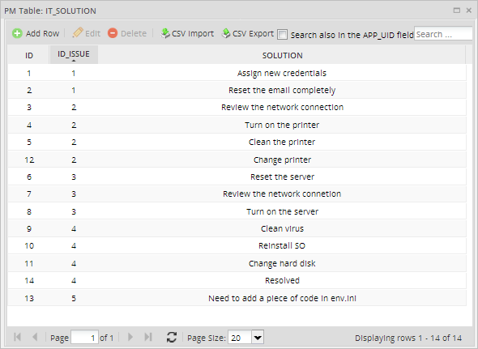
If the Immediate solution is selected, the case will be routed to the Review and resolve issue task.
- Detailed analysis: This option enables the Preliminary comments field, and once the case is submitted, it will be routed to the Detailed analysis task and assigned to the IT Help Desk team to retrieve more information.
In this example, Alyssa selects the Immediate solution option and selects "Blue Screen" in the Summary field; the description, cause of the issue and the possible solutions are filled in automatically. Alyssa selects which solutions are necessary to resolve the problem by checking the box next to the Solution field.
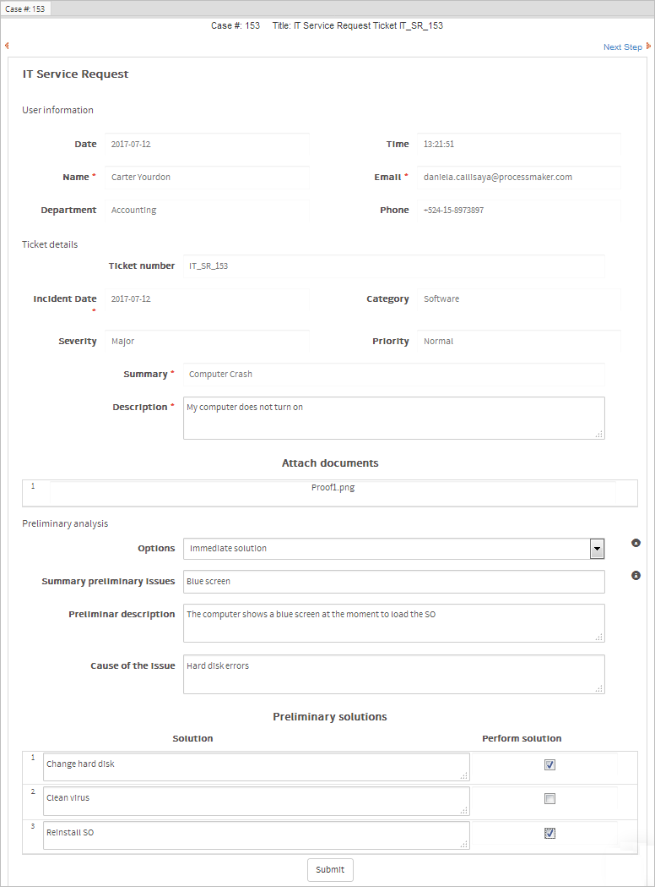
The case is routed to the Review and resolve issue task, which is assigned to an IT Operations's user. In this example, the case is assigned to Jacob.

Review and resolve issue - IT Operation
Log in as Jacob and review the case information, which is in disabled mode, to execute the options suggested in the Probable Solutions section to resolve the problem.

Report details solution - IT Operations
After reviewing and trying to resolve the issue in the prior task, the case is routed to the Report details solution task, where the IT operations user will report the results of his investigation.
As shown in the image below, the Dynaform in this task has four sections: User Information, Ticket details, and Preliminary analysis, which are shown in Disable mode, and Report details solution, which is in Edit mode. This last section is where the IT operations user must detail how the issue was resolved or if the issue needs more information.
In this example, Jacob has discovered that after changing the hard disk the computer works well. But he needs more information, so he clicks the Detailed analysis button.

The case is routed to the Detailed analysis task to get more information from the IT Help Desk.
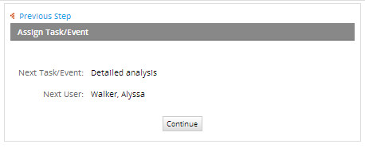
Detailed analysis - IT Help Desk
The Detailed analysis task is performed by a user from the IT Help Desk. In this task, the user from the IT Help Desk decides whether the issue needs more analysis and if it should be elevated to the IT supervisor, or adds more information about how to resolve the issue. There are four sections in Disable mode in this form. As shown in the picture below, the disabled part of the form includes the sections User Information, Ticket details, and Preliminary solutions.
The fourth section of the form, Detailed analysis, has a text box field named Additional Information where the IT Help Desk user can write suggestions for how the issue can be resolved. There is also a dropdown field named "Send to" with the following options: Resolve the issue and Obtain more information.

The case is routed to the Obtain more information task, which is assigned to the user supervisor of the IT Help Desk team - the user Andrew.
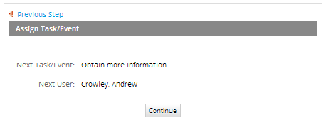
Obtain more information - IT Supervisor
The Obtain more information task is performed by the IT supervisor when the issue is hard to resolve. In this form, the supervisor evaluates the issue and adds more information on how to resolve it. As in the previous forms, all sections that were filled in during the previous tasks will be in Disabled mode. Therefore, the supervisor will only have one text field to fill in when the case is routed to the supervisor.
The text field that the supervisor needs to fill in, New Information, is located at the bottom of the form shown below. In this example, Andrew consults the inventory and comments that the capacity of the hard disk that needs to be changed.
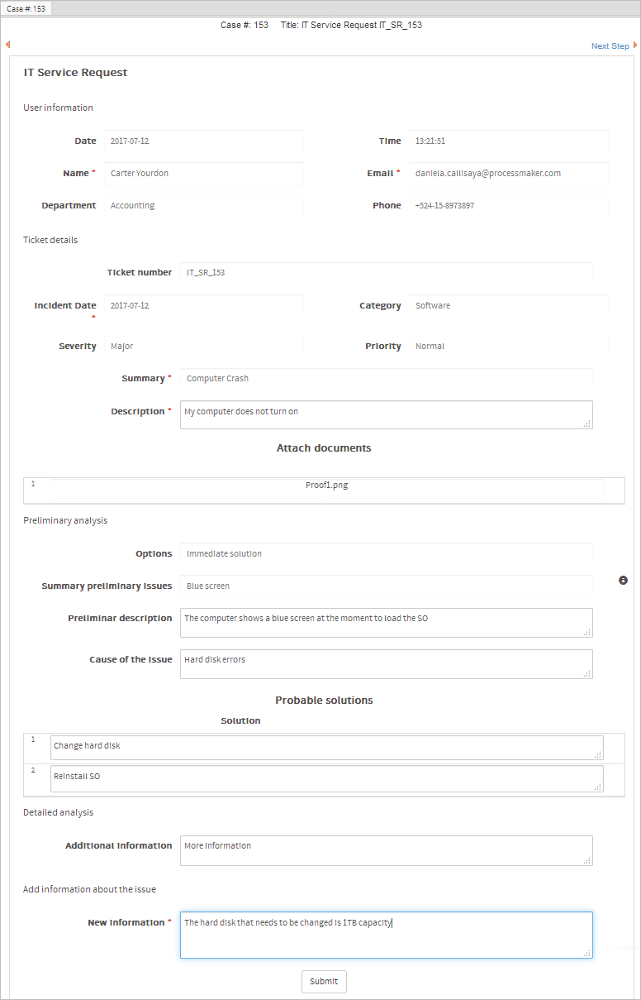
The case is routed back to the Detailed analysis task.

Detailed analysis - IT Help Desk
Alyssa reviews the form again to determine whether enough information has been provided and adds a new solution ("Resolved" in this example) to the New Solutions section.

The case is routed to the Review and resolve issue task, which is assigned to the user Jacob.

Review and resolve issue - IT Help Desk
Jacob evaluates the new information.
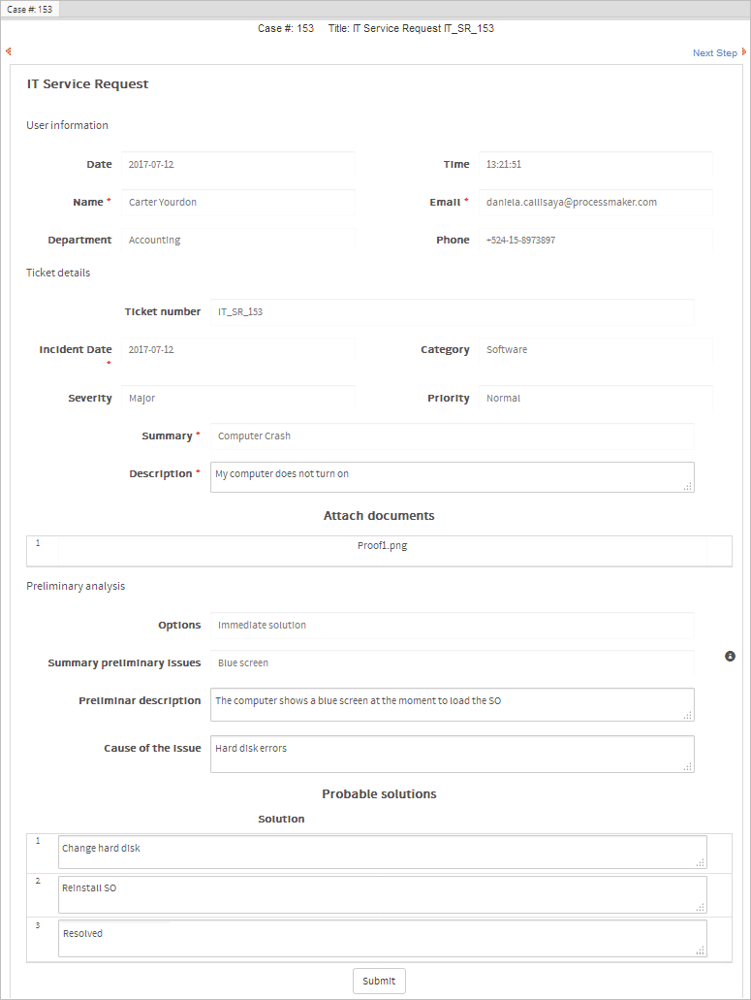
And submits the case to the Report details solution task.
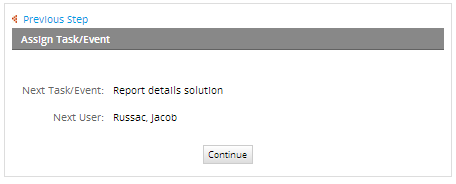
Report details solution - IT Help Desk
Jacob performs the new solution and writes on the form that the hard disk was changed and the problem has been solved.
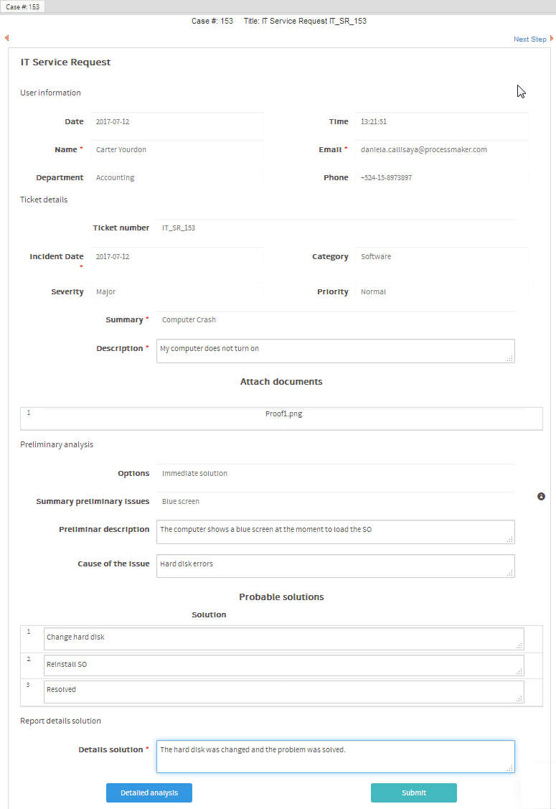
Then he submits the Dynaform, and the case is routed to the next task.

Review issue resolved - IT Supervisor
In this task, the user's supervisor reviews the case, which has been resolved at this point. The first Dynaform contains all the case information in Disabled mode so the supervisor can review what has been done by the person who solved the issue, as shown in the image below:

The second Dynaform's fields are in Edit mode so the supervisor can provide a short summary on how the issue has been resolved. This information will be updated in the database after the form has been submitted. Once the supervisor performs this task, the case will finish successfully resolved.
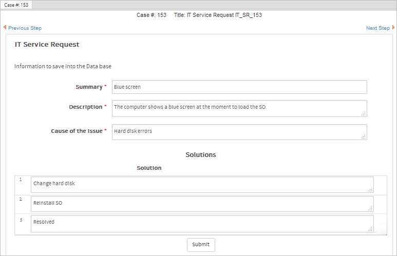
A notification is sent to the employee who reported the issue, letting him know that the issue has been successfully resolved.
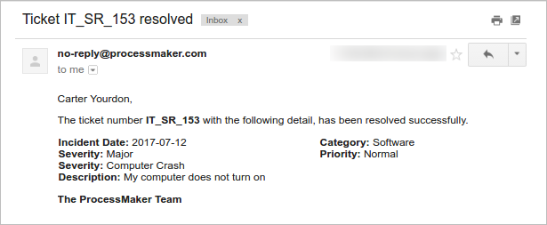
Additionally, Andrew can view the IT Service Request Report by going to Home > Report User in the left menu.
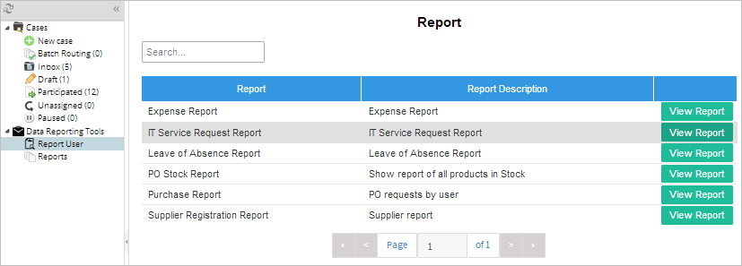
The IT Service Request report shows all cases that have been completed, cases in draft and cases that are in progress. This report is generated using ProcessMaker's Data Reporting Tools plugin.
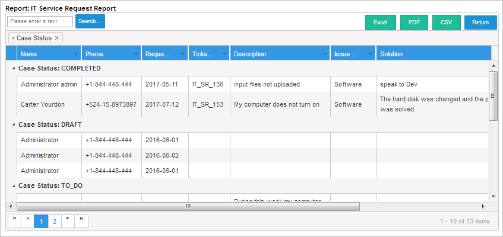